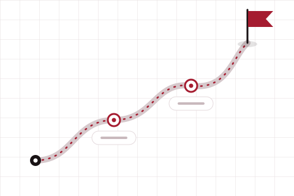
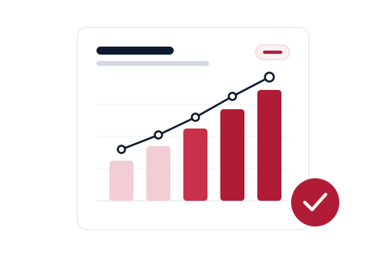
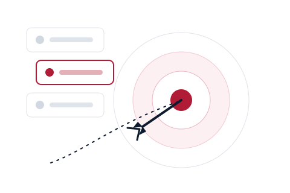

전직 입학사정관
N. G.
입학사정관은 내 지원서에서 무엇을 볼까요? 강점과 이야기, 다음에 집중할 것을 함께 짚어 봐요.
경력 보기전직 입학사정관에게 준비 방향을 묻거나, AP · IB · A-Level · IGCSE · SAT · TOEFL 중 지금 필요한 과목의 튜터를 찾을 수 있어요. 두 서비스는 따로 운영되니 필요한 쪽만 신청해도 되고, 둘 다 이용해도 돼요.
준비 상황과 우선순위, 앞에 놓인 선택을 두고 평가 경험이 있는 사람의 의견을 들어요.
자세히 보기 튜터링AP · IB · A-Level · IGCSE · SAT · TOEFL. 학생의 수준과 학교 진도, 시험 기관에 맞춰 연결해 드려요.
자세히 보기 교과 밖까지아이디어에서 완성까지 함께하는 프로젝트, 공부 습관과 계획, 선택을 꾸준히 봐 주는 멘토링이에요.
자세히 보기 경시대회수학, 에세이, 국제 관계까지 — 대회별 심사 방식에 맞춰 준비해요.
자세히 보기모든 수업 뒤에는 학생 한 명을 위한 계획과, 꾸준히 확인하는 진도, 학생에 맞춰 바뀌는 전략이 있어요.

01첫 상담에서 만들어요. 지금 어디에 있고 어디로 가는지, 그 사이의 단계까지 정리해요.

02수업 리포트와 정기 점검으로 무엇이 나아졌고 무엇이 남았는지 학부모님도 알 수 있어요.

03정해진 커리큘럼이 아니라, 학생이 공부하는 방식에 맞춰 수업과 과제, 속도를 조정해요.
원하는 입학사정관을 고르거나, 질문에 맞는 분을 운영팀이 추천해 드려요.
짧은 신청서에 지금 상황과 이야기하고 싶은 내용을 적어요.
운영팀이 가능한 일정과 이용 조건을 안내해 드려요.
회사가 마련한 Zoom 링크에서 일대일로 이야기해요.
신청은 예약 확정이 아니에요. 일정, 가격, 결제는 신청 뒤에 운영팀이 따로 안내해 드려요.
목표, 현재 수준, 학교와 시험 기관, 공부 방식을 먼저 들어요.
가장 잘 맞는 튜터들을 추천 이유와 함께 안내해요. 선택은 직접 해요.
과목, 프로젝트, 멘토링까지 학생에게 맞춘 계획으로 수업해요.
리포트를 꾸준히 보내 드려서 학부모님도 진행 상황을 알 수 있어요.
튜터링은 입학 상담 없이 바로 신청할 수 있어요.
튜터는 가르치고, 운영팀은 매칭과 계획을 챙기고, 학부모님은 진행 상황을 전달받아요. 모든 흐름이 학생 한 명을 중심으로 움직여요.
미국 대학을 준비하는 학생과 학부모를 오랫동안 만나 왔고, 그 경험에서 이 서비스를 시작했어요. 전직 입학사정관과 과목 튜터는 실제 경력 그대로 소개하고, 상담 없이 누군가를 배정하는 일은 없어요.